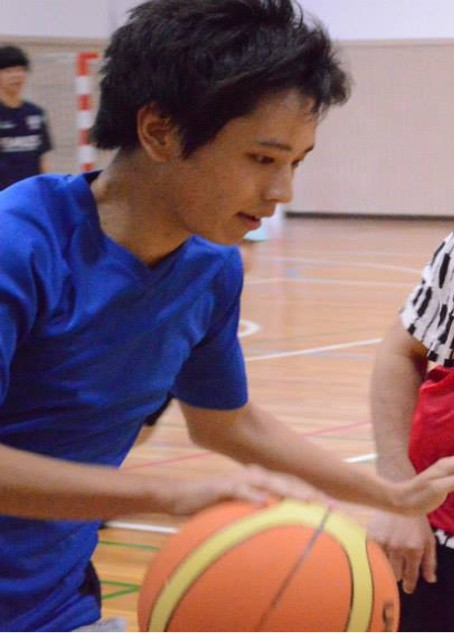

よろしくおねがいします！！
私の現在
プロフィール

名前: 伊佐次伸也(イサジシンヤ)
生年月日: 1991年8月22日（24歳）
出身大学: 九州大学芸術工学部（大学院）
出身: 兵庫県神戸市
高校：私立六甲学院（６年制の男子校）
趣味: 音楽、バスケットボール
好きな言葉: Speech is silver, silence is golden.
専攻は心理学 専好は音楽
私の専攻は知覚心理学、という学問です。
心理学は「科学的」で非常に「面白い」学問だと思っています。
どのようなテーマでも、科学的なルールと手続きに則って実験を行えば、権威ある論文で評価される
「キスをする時顔を左右どちらに向けるのか」「赤い服は本当にモテるのか」など…
(本当に掲載されている論文です)
音楽を演奏することが好きです。
音楽の魅力は、「一人一人の演奏が重なって大きな流れになる」ところと「コミュニケーションを言葉に頼らない」ところです。
私の過去
6年の男子校生活、天国か地獄か
兵庫県の私立中高一貫校で過ごしました。
変わったルールの学校で、短パンでトイレ掃除させたり、遅刻の罰はグラウンドを５周走る、など
特殊なルールがたくさんありました。
思春期の6年間を男子だけで過ごすことで何か大切なものを失った気もしますが、とても楽しかったのを覚えています。
高校３年、単身福岡へ
自分の将来をあまり深く考えず「なんとなく近くの大学で、なんとなく就職するのかな」と思っていたが…
書店で手に取った九州大学の学部一覧の中に「音響設計学科」の文字。
これだ！！と思い、高３の秋に志望校変更。この時ばかりは進学校に行っていた自分に感謝しました。
大学、思ってたのと違う…
「音響＝音楽」と思い込んで入学、しかし…
授業のメインは物理。波動方程式、振動モード、固有周波数など、とにかくわけのわからない単語だらけ。
もちろん楽しい授業もたくさんありましたが…。
授業はそこそこに、クラスメイトと始めたロックバンドの活動にのめりこんでいました。
何か形になるものを
ロックバンドでたくさん曲も作って、たくさん演奏して、いろんな人と出会いお世話になりました。そんな自分たちの活動の記録を音源として残したいと思い、
音源制作に力を入れました。
楽曲、レコーディング、アートワーク、全てセルフプロデュースした４枚のCDは生涯の宝物です。
大学院で得たもの
人に伝えるためのプレゼンテーションのやり方、科学的な論文の書き方、論理的な議論の仕方など、
様々なスキルを習得しましたが、一番は問題を自分で設定して解く力だと思います。
これからの私
一騎当千の社会人
私がJCAに入社を決めた理由は「自分自身のため」です。
これからの時代をちゃんと生きていけるように、会社にぶら下がるのではなく、一人の社会人として「強く」ありたいと思い、そうなるための環境が用意されていると思ったからです。
to be ではなくto do
「金持ちになりたい」to beではなく
「こんな商品を売りたい」というto do。
「偉い人間になりたい」というto beではなく、
「一生懸命仕事をやりたい」というto do。
しっかりとした「個」と他人との「和」
人は、協力してこそすごいものを作れると思います。
しかし、他人とうまく協力することは簡単なようで難しいです。
一人一人がきちんと「個」を生かして、大きな「和」を作っていい仕事ができるようになるのが、私の目標です。
まだまだ未熟な人間ですが、これからもよろしくお願いします。